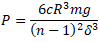

Ciccio981 mar 2018, 19:46
Se la soluzione è giusta invio il procedimento
-
Allegati
-

- SOLUZIONE LEVITAZIONE.png (945 Byte) Visto 7510 volte
Aleksej994 mar 2018, 19:43
@gamow00 : potresti spiegare meglio il calcolo della differenza di quantità di moto verticale? Perché a me verrebbe \(p_i-p_r = \frac{h} {\lambda} cos ( \alpha) - \frac{n h} { \lambda} cos ( n \alpha) \) per singolo fotone ovviamente